Community Contest 1: Settlement Level


Contents
- 1 Contest Closed
- 2 Brief
- 3 Groups and Prizes
- 4 Helpful tutorials
- 5 Entries
- 5.1 Hillside Village by AmstradHero - 1st place
- 5.2 Village by the Sea by Talisander - 2nd place
- 5.3 Sylvhaven by Princecorg - 3rd place
- 5.4 Settlement of Belgray by Jackkel Dragon
- 5.5 Hakkon's Gift by Lord of Fangs
- 5.6 Village in the River by Nattfodd
- 5.7 The Swamp by Ponozsticka
- 5.8 Evermist by TimelordDC
- 5.9 Ojardsi by Turtlecrunch
Contest Closed
This Contest is now closed, please pick up the bundle from here to see all the great entries! Congratulations to the winners and the runners-up - every entry is extremely impressive and provides a great start to the Catalogue!
Brief
Design a town/village/hamlet level. The contest discussion thread can be found here. Deadline was Monday 13 September.
Requirements
All entries must:
- portray a "friendly" settlement of some kind
- be complete - do not enter a small section of a larger city, unless you also submit the rest of the city.
- lvl source as well as exported layout files must be included. (.lvl file, as well as the folder generated by Do All Local Posts, which can be found: My Documents/Bioware/Dragon Age/Addins/(addinname)/Core/Override/ToolsetExport/(layout))
- contain at least the "outdoor" level. Additional rooms are optional, but if included, areas must be set up with area transitions.
- be submitted before monday 13 september midday (GMT+0)
Guidelines
Strong entries will:
- ... have around a dozen or so buildings and outhouses. Consideration will be made for extending the level by adding interior levels.
- ... visually portray the towns primary function such as fishing town, mining town, farm town, etc. For example, a farm town might include features like a miller, grocery market and bakery. A defensive outpost might have a wall around it.
- ... consider access to the town. This may inlude roads, paths, harbours, etc.
- ... include an area resource to add a handful of important interactive objects, such as doors. The town doesn’t need to be populated in this contest.
- ... have considered the sky and surrounding environment in the distance.
- ... be usable in a variety of mods. Please don’t go too overboard with weird additions such as crashed alien ships or other features that would make it extremely specific to a module.
- ... prioritise level design over custom content. While custom props are allowed, such contributions must be shared with the level and will not gain "bonus points". You should try entering any custom props you make to our second contest!
Groups and Prizes
Groups
This contest has only one group.
- 1st place - 15 points, chooses first
- 2nd place - 10 points, chooses second
- 3rd place - 5 points, chooses third
- All other entries meeting requirements - 1 point
To receive an "entry point", your submission must meet the requirements of the contest, listed at the top of this page
Prizes
Please see Community Contest Prizes
Helpful tutorials
- Complete Outdoor Level Making Video Guide by mikemike37 (recorded for this contest)
- Level Editor by various (Builder Wiki)
- Level Editor Tutorial by various (Builder Wiki)
- Making a new, playable module by Fen Tabris
- Building levels by Fen Tabris
- Custom Level and Room Building video tutorial by st4rdog.
- Lightmapping guide and troubleshooting by mikemike37
- Model List - Wiki list of prop/structural models with pictures
- DA Toolset Prop List - Downloadable prop list files - .doc and .xls
Entries
For information on how to enter, please see the Entry FAQs
For information on Judging, please see the Judging page.
IMPORTANT - consent to share By entering this competition you consent to share your work for other community members to benefit from. Where appropriate, source files should be shared. The work *MUST* be your own (obviously you may use DA props and selection groups). Do not use custom props unless you have explicit consent from the author to share. You must include them with your level. Others may use and modify your work in their Dragon Age mods, though are encouraged to give credit. As the entries are judged, local copies will be saved If your work is taken down. If your work is taken down, you allow for it to be re-uploaded, crediting the work in your name.
Hillside Village by AmstradHero - 1st place
Atop a lush hillside, this small farming village offers respite, shelter and trade for weary travelers. A plateau with a path leading upwards offers an even better view of the houses below. Fields of crops around an assortment of houses, a tree filled landscape and a lake all combine to make a pleasing vista.
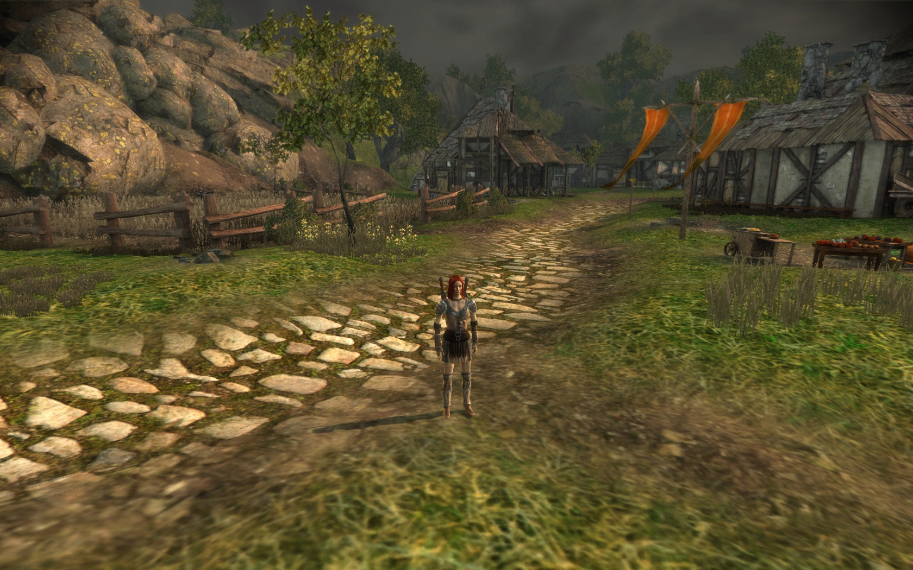 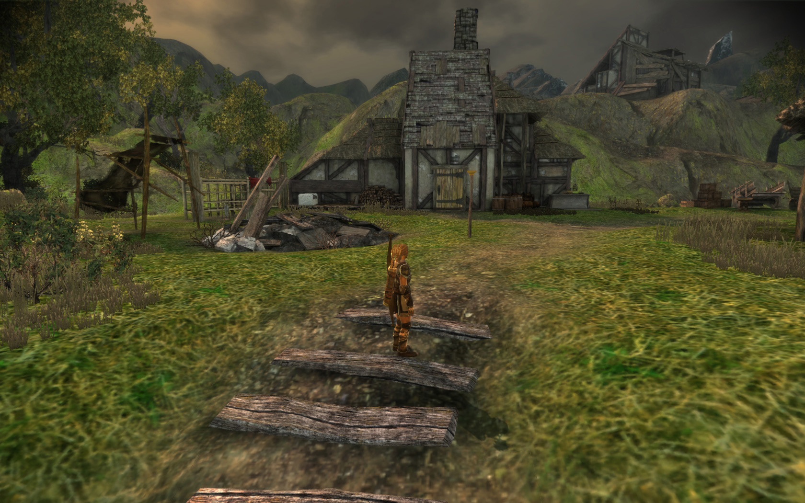 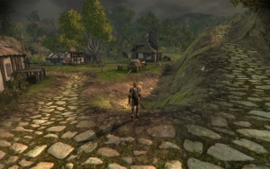
{kind=link}
{kind=link}
{kind=link}
Judges Comments
mikemike37
Nice dramatic sky, lighting and wind! Great use of a wide variety of props and ground textures.
Improvements: two routes to the upper village might help reduce the tedium of walking up the path. some smoking chimneystacks might compliment the grey sky/mood, even though its daytime.
semper
comments:
- uv tiling of the grass texture is too big in size
- atmosphere is stunning
- very well fleshed out level mesh
- level lighting is a bit too yellowish
- full of details, very good usage of props and vista objects
Adonnay on Hillside Village
+ Fitting dark atmosphere
+ Lots of details like tools, a building site and gardens
- Ruin entrance seems a little misplaced and artificial
Village by the Sea by Talisander - 2nd place
A small farming town on the outskirts of a walled city. To the south, a wide sea has swallowed the ruins of the last great empire.
{kind=link}
{kind=link}
{kind=link}
{kind=link}
Judges Comments
mikemike37
Really visually arresting, lush colour palette! nice little islands dotted in the distance. Great mediterranean seaside atmosphere.
Improvements: level should be nearer to 0,0,0 in editor: quite hard to find! Really wanted to walk through portcullis to see what else was there! Couple of ships dotted out at sea? Yellower sun? Can walk through statue (it has no collision, use terrain collision or an invisible box).
semper
comments:
- unique level design with stunning atmosphere
- very well fleshed out level mesh
- ambient animations - great!
- full of details with lots of props
- the default cottages seem out of place with so many terracotta roofs around
- the one tree near the wall of the sea is sunken into ground
- the ground texture of the right side with the 4 windmills looks too boring
- sunlight is a bit too bright
Adonnay on Village by the Sea
+ Awesome panorama with the three windmills and the rolling hills
+ Many details
+ Nice mediterranean atmosphere
+ Very nice castle, I wish I could walk through the gate
- No harbour or pier of any sort seems unlikely for a village at the sea
- the sea feels a bit bland
Sylvhaven by Princecorg - 3rd place
Sylvhaven is a small fisher village located north to Gwaren. It was once a place where merchants, itinerants and any kind of trepassers travelled to.
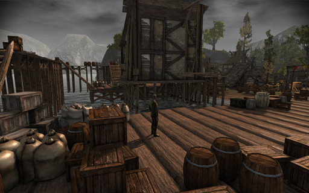 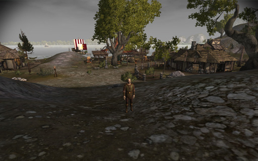 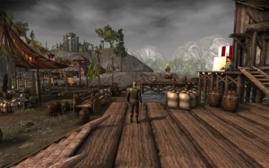
{kind=link}
{kind=link}
{kind=link}
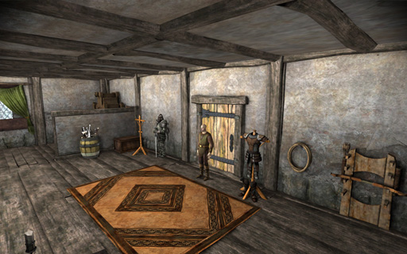 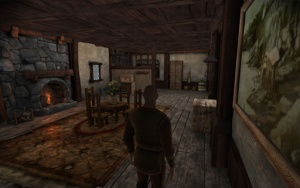 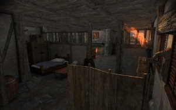
{kind=link}
{kind=link}
{kind=link}
Judges Comments
mikemike37
Love the attention paid to the view out to sea. Nice walkable piers. Some great details with falling leaves, glowing magic fire and animated lights and heaps of carefully placed props.
Improvements: could use some collision to prevent the player WASD-walking off the piers. some pretty unexpected terrain collision on one slope that probably doesnt need to be there
semper
comments:
- the terrain collision is bugged at the "catwalk". the player can't walk down the sides which feels odd.
- collision usage to prevent the player falling off the piers
- level lighting is too bright - doesn't fit the sky
- very good usage of props and full of details
- the sea is gorgeous
- good usage of vista objects, besides the trees in the background - better use tree nodes for this
Adonnay on Sylvhaven
+ Great viking/norse themed village
+ Nice marketplace with distinct "shops"
+ Good (=rare) use of ruins on the hill, unfortunately not reachable, would make a nice place for some worshippers
- Palisades should not only cover the entrance but the whole hill
- Piers are a little too cluttered, front piers cannot be reached (would make a nice panorama spot)
Settlement of Belgray by Jackkel Dragon
Belgray is a small human settlement in the Brecilian Passage, on the road to Gwaren. It is nestled in the hills in the southern part of the Brecilian Forest, and a mountain stream provides water and travel into the forest. A mountain trail leads to the main road to Gwaren.
This is a small area (~ 64m x 32m walkable). It is best used in a hilly area near water. The name, of course, can be changed to whatever fits the setting best. There is a night version of the area that has a lit bonfire along with altered lighting.
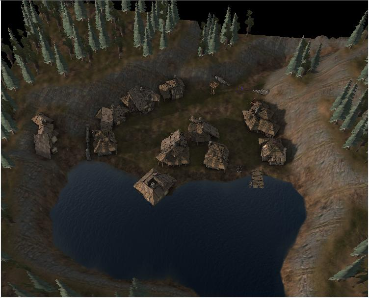 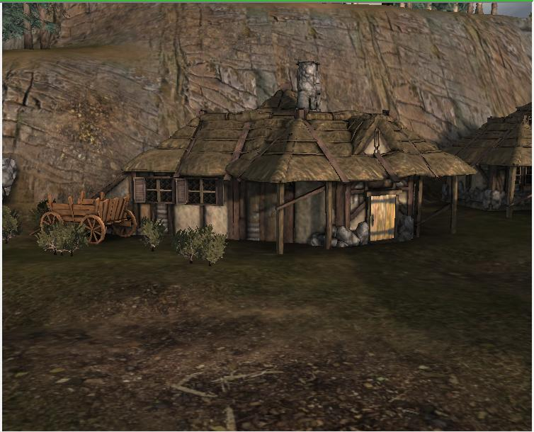 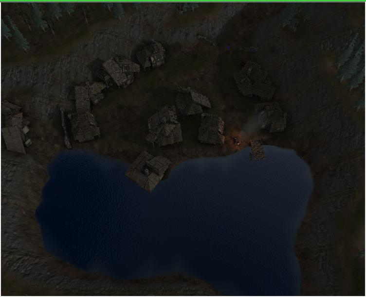 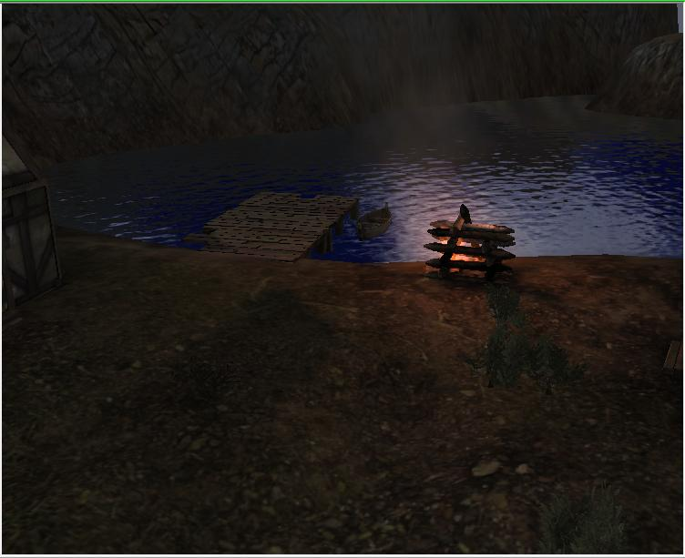
{kind=link}
{kind=link}
{kind=link}
{kind=link}
Judges Comments
mikemike37
Love the day/night variations. Robust little hamlet level with careful attention paid to collision. Lite on resources (good for load time).
Improvements: Could have used higher UVTile on the ground textures. Watchtower looks unlightmapped? Surrounding hills very plateaue-ed and flat. Vista mountain objects? Night sky is extremely blue.
semper
comments:
- uv tiling of textures is too big in size
- a lot more props and vegetaion would improve the atmosphere
- floating houses
- no vista objects - the feeling of a big world is lost
- the ship in the sea could use an animation (select the boat prop and type "boat" in the default animation tab within the object inspector)
- clouds are too pixelated
Adonnay on Belgray
+ Day/Night variations
+ Good use of houses and terrain
- Seems a little "clean", could use a little more props
- unreachable building in the back of the village
Hakkon's Gift by Lord of Fangs
I named this settlement Hakkon's Gift as per the background tale on the DA Nexus page. It can be renamed as appropriate for any module it is used in. Basically, it's a former Avvar village built into the side of a snowy ridge in a newly explored area of the Frostback Mountains, Wintersbreath Pass. It is now populated by hardy Fereldan hunters and trappers. Obviously this can be changed to reflect the module- I tried to arrange the terrain and vista mountains so that the entire scene sloped upward, so that it didn't necessarily have to be located high in the mountains. It could be used as a mountaintop town, a snowy foothill town, etc.
All models are stock- I made heavy use of buildings pieced together from various props to portray a primitive culture. Hakkon's Gift includes two zone entrances/exits on opposite ends of the village, with paths leading away. I included a possible dungeon/adventure zone entrance just outside the village- an ice cave, its entrance frozen over (can be set up with an invisible area transition). A team has broken through and maintains a small entrance into the cave. I tried to set it up so it could be easily ignored (by removing the props or just not adding an area transition) and used simply as a place to visit just outside of town if the module does not have such a dungeon/zone.
Points of interest: Craft enclave and trading post, frozen ponds with ice fishing camps (ice is walkable including large pond just outside village), totem poles to the ancient Avvar gods, a butcher/smokehouse/meat trader, bridge over a frozen ravine, storytelling cave, shaman's hut with ancient runestone, a new building's construction site, Hammerhall (intended as a tavern/mead hall/whatever), frozen cave entrance, thane/village chief's longhouse.
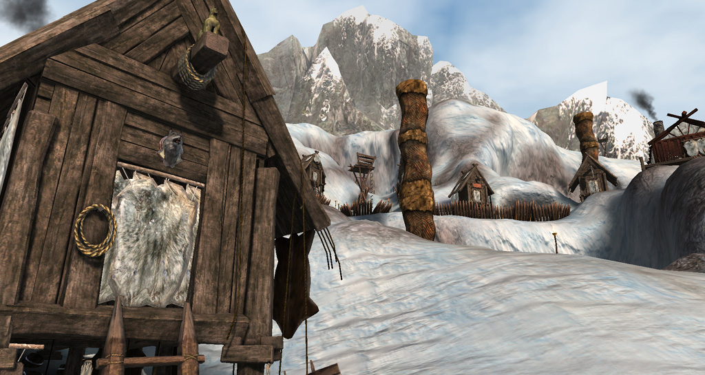 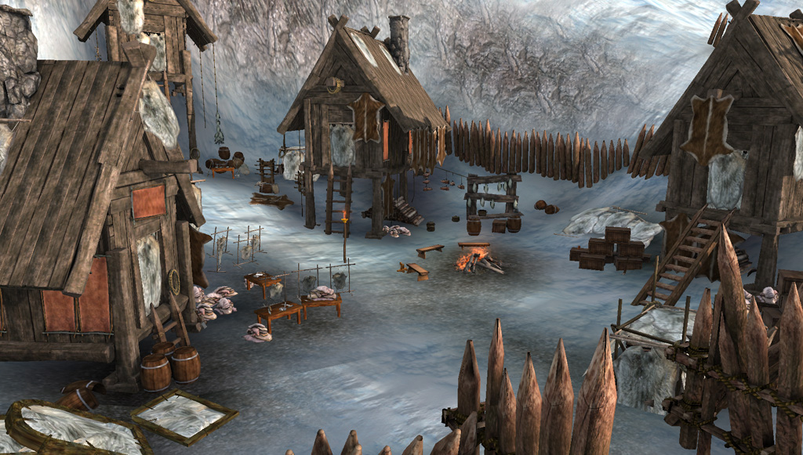 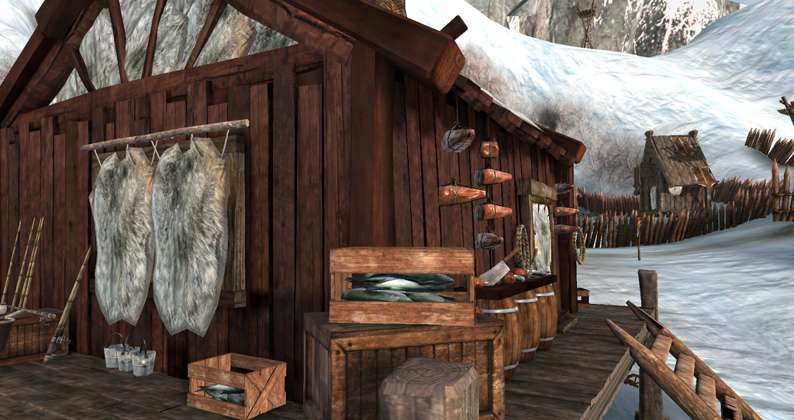 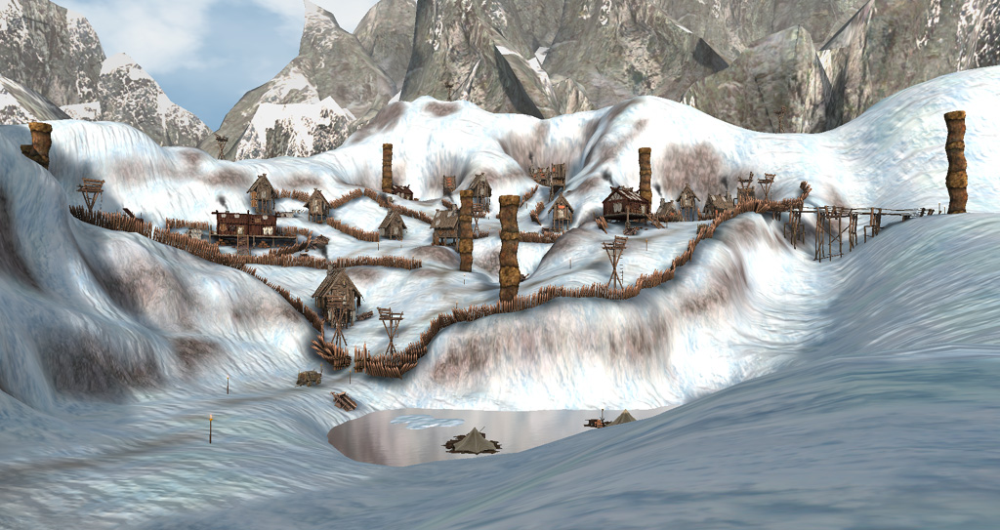
{kind=link}
{kind=link}
{kind=link}
{kind=link}
Judges Comments
mikemike37
Good use of props to give flavour. Love the sloped level and torches and mountain vistas. Ice is a nice touch.
Improvements: would love to see a snowfall weather VFX applied to the whole level. Path could use... something? little stones/posts marking the way/footprints (flat texture prop, like bloodstain props). Ice lakes sould use invisible floor collision to allow pathfinding.
semper
comments:
- full of details with lots of props
- very unique level design
- very good usage of vista objects
- the surrounding fence is too repetitive, try to break this up
- good lighting
- try to highlight the walking path
Adonnay on Hakkon's Gift
+ Amazing Panorama
+ Great many details and recognizable professsions
+ Really like the cavern entrance, the ice (plus fishermen's tents) and the shaman hut
- Palisades slightly overused
- Could use a little more huts to cover some of the open spaces
Village in the River by Nattfodd
Once a mighty stronghold, today this village is inhabitated by Fereldan human people. The architecture of the buildings and the divine atmosphere a visitor can feel, make this village still a safe place to rest and refill. Placed to the extreme northen border with the land of Orlais and used during orlesian wars by both sides.
Not more is known of its original inhabitants; all seems to be very old and builded up in an ancient time ruled by the gods.
{kind=link}
{kind=link}
{kind=link}
{kind=link}
Judges Comments
mikemike37
Really unique idea. Cool little huts and the terrain-houses turned out nice! Nice gloomy sky and dramatic shadows compliment the imposing ancient building, framed nicely as you enter the gates.
Improvements: Large stone bridge to connect level. More ambient light would allow player to see in shadows. Higher UVTile would give greater pixel density to the ground. Larger area and vista objects would prevent the need to wall off the backdrop in such a flat manner. Consider finding something as pillars to break up the uniformity of the wooden town wall surround.
semper
comments:
- there's no light probe so the character shadows are too dark
- better use tree nodes instead of the vista tree line - looks too flat
- try to create lod meshes for the objects used with the buildings to avoid a pop up effect
- the cliffs could use more tesselation, props and a better texture usage to avoid the repetitive for the eye
- uv tiling of the ground texture is too big in size
- floating trees near the right cliff
- unique buildings
- try to break up the surrounding wall with destroyed parts and towers or a construction site to keep it interesting
Adonnay on Village in the River
+ Great, original idea
+ With the right ambient sound the waterfall will really make an impression
+ Nice temple and impressive palisades
- Many prop popups (lookout tower, temple gargoyles), not sure if this are technical limitations
- Very few props/details
- The level borders seem very artificial (sharp edges, only one treeline that can be seen through), probably engine limitations
The Swamp by Ponozsticka
As you can see from screenshots and other files, the village is situated in the middle of the swamp, among ancient ruins of the city that used to be there long time ago (before the place turned into a swamp). Remainings of the city can be seen to the north of the settlement, while southern roads are being used by merchants, this way there are less plants (carriage wheels, walking etc.)
Village itself is surrounded by wooden fences, to secure it from anything that might come from the swamp. In the middle of the village you can find the market, while the outskirt serves as camp for merchantes or traspassers.
{kind=link}
{kind=link}
Judges Comments
mikemike37
Nice use of fog and overcast sky. Lillies look great :) nice expansive level. great use of vegetation.
Improvements: a darker ground texture would help the ground look more saturated/peaty. Fewer trees at level edge, placed at depth, rather than making one solid wall? More vegetation in playable area/settlement? Tilted ruins "sinking into swamp"? Where was lightprobe placed - water reflection doesn't seem to match level?
semper
comments:
- another color for the sunlight - the level is covered in fog but still there's yellow light shining at the chars
- although it's a swamp the level mesh is too flat in the walkable area
- more vegetation in playable area
- the trees in the distance are too repetitive. better use a varation of trees combined with a vista tree line and a more 3d placing.
- floating vegetation
- personally i found the distance fog too dense. the skyline was covered in white. i would have created it darker and played with sea fog, the prop where the fog only covers the ground.
Adonnay
+ Great Atmosphere but I understand why you wanted more fog. Discovering the ruins while walking through would have been a great effect.
+ Nice details like the merchant weagon and the separated tents
- Large portions of the map have no vegetation and seem more desert like than a swamp, perhaps a different ground texture would help.
Evermist by TimelordDC
Evermist is a village located between West Hill and Highever. The primary sustenance of Evermist is farming, supplemented by fishing.
The village has been designed to offer various areas of interest/story-points:
- A few houses have been built on earth/rock mounds looking almost purposely raised to hold those houses aloft
- There is a separate area for the peasants who work the farms, identified by primitive huts
- The Chantry (or a generic fort-like structure) is in an extremely strategic and defensible position overlooking the village
- There is a sunken house in one of the mounds but without any structural damage, almost as if it was done by magic
- A huge manor house has had its doors closed for a while now though rumor has it that lights can be seen flickering inside in the night
- A boarded house atop one of the mounds has been warded by the Chantry and the villagers have been asked to keep their children away from it
- Though the rich folk living under the shadow of the Chantry never seem to do any work or own any farms, they get richer and have isolated themselves off from the rest of the 'common' folk
There are 2 entrance/exit points to Evermist -> one through the forest near the stream and one near the high walls of the manor.
Additional information for builders:
- The level uses a resized gate fence to fit in with the fence sizes. This is included with the level and is called plc_tl_gatefence. You need to place the folder plc_tl_gatefence in your <addins>/core/override when working on the level.
- Due to the views from elevated areas, the draw distance for some of the vegetation is High.
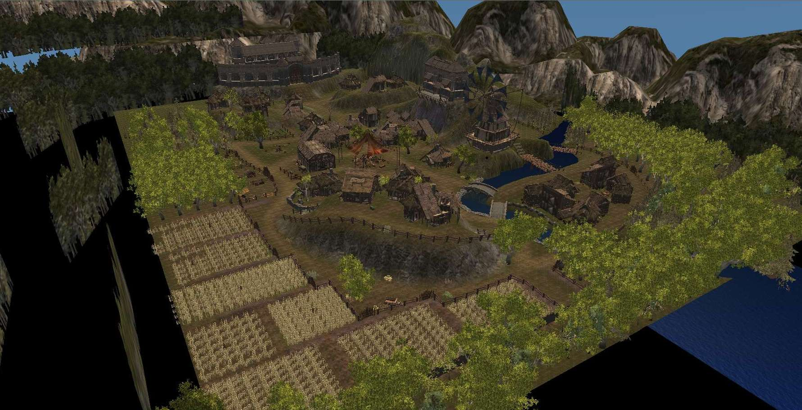 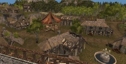 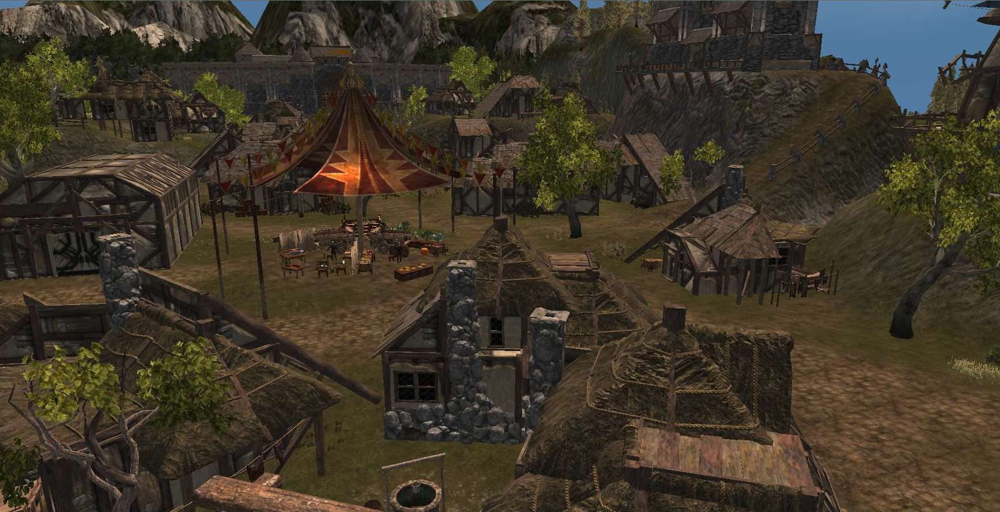 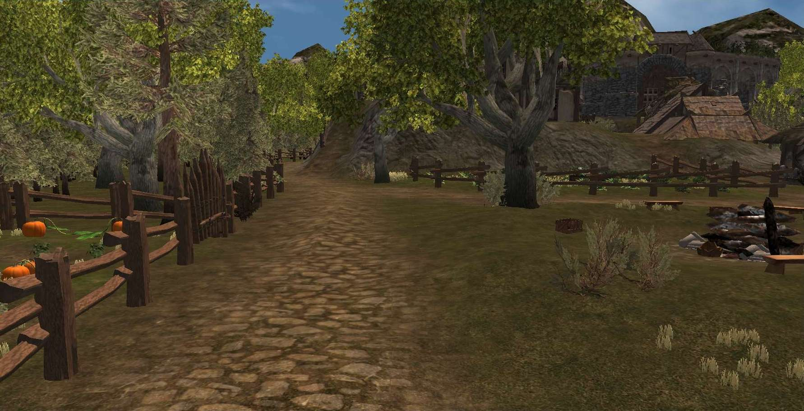
{kind=link}
{kind=link}
{kind=link}
{kind=link}
Judges Comments
mikemike37
Really vibrant and well-thought out large village level with many uses. Good use of terrain to help features stand out.
Improvements: could really use some more attention paid to collision (use terrain collision walls - pathfinding logic and WASD-movement off cliffs/up steep slopes, many objects can be walked through). One-way wall in large gatehouse.
semper
comments:
- tree line is too near in distance and looks flat, better use a bigger terrain size and tree nodes
- floating buildings
- on top of the hill there's a model "bug" where you can look through the uncovered background of a door prop
- no terrain collision
- windmill without ambient animation (just select the windmill prop and type "wind" within the default animation tab of the object inspector)
- the terrain mesh is too flat
- a lot of details and a very good usage of props
- the fence prop is heavily used - try to breake this up
Adonnay on Evermist
+ Great use of crops, gardens and fences
+ The river and the bridges are a nice touch
+ Slum/alienage for the poor? Certainly realistic
+ Quite large without beeing repetetive
- Some collision issues and see through parts (i.e. the "shrine" on the hill, a hole in the door to the fort)
- Level could use more collision borders to prevent getting to close to the edges since the tree textures are very crude
Ojardsi by Turtlecrunch
Ojardsi was first a Tevinter city, and now a crumbling ruin that has attracted a large population of surfacer dwarves. Human stragglers have joined the settlement as well, though they've had to build their houses themselves. And eventually with the humans came the attention of the Chantry, which promptly made its mark on the nascent village. This angered the dwarves considerably, and they have been falling back on old habits, reconstructing their Paragons from memory and building a competing house of worship. With their contemplation of the old religion, most of Ojardsi's dwarves have also returned to a kind of caste system: newcomers to the settlement must live in designated areas with only tents for shelter, and must work many years before they are eligible to join one of the dwarf common houses.
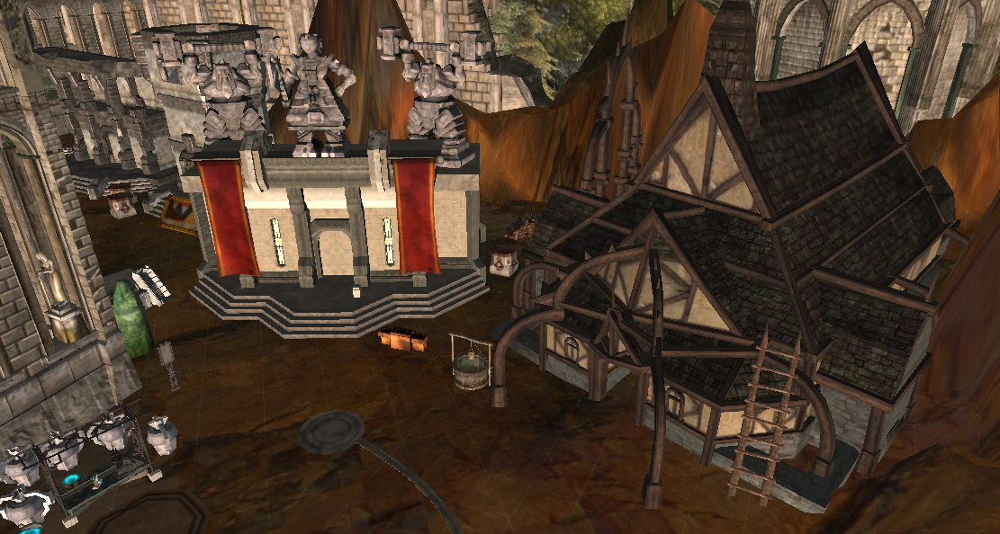 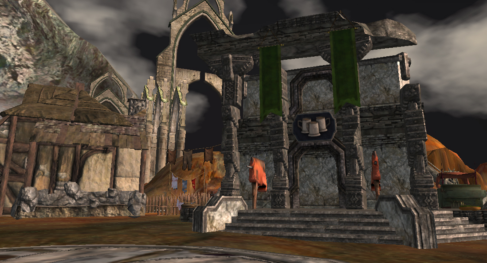 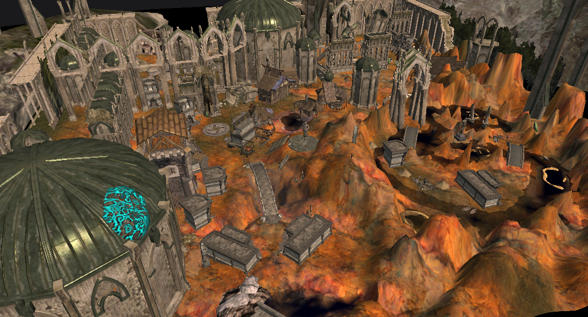 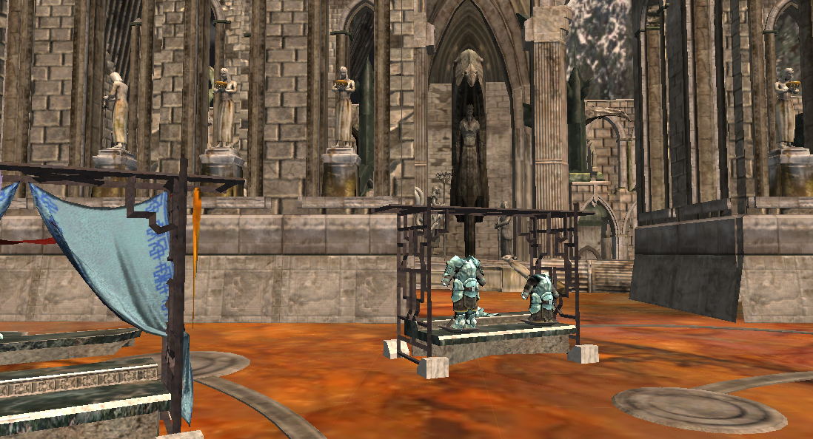
{kind=link}
{kind=link}
{kind=link}
{kind=link}
Judges Comments
mikemike37
Love the grandeur of the ruins. Interesting and distinctive use of terrain. Too bad the layout didn't include all the buildings you prepared in the level :(
Improvements: *really* needs terrain collision to block off the no-collision vistas. Would like to see more tesselation to prevent such sharp low-poly edges on terrain. Greater UVTile should have been used to increase rock pixel density. No minimap generated. Gaps in objects could be blocked off with other props.
semper
comments:
- the uv tiling of the texures is too big in size
- the level lighting is too flat, wrongly colored and comes right from the front instead from above
- the level geometry lacks tesselation
- the ground texture is overly used and therefore the walkable path is hardly noticeable
- very good and monumental buildings
- better use of terrain collision
Adonnay on Ojardsi
+ Dark atmosphere, feels like the end of the world with all those mixed architecture and the reddish ground
- I usually don't go too much into the technical side but the tiling could use some retouching and many of the collisions are missing
- The mixed architecture is a bit overdone in some places and feels a little out of place
- Large unused areas should be avoided